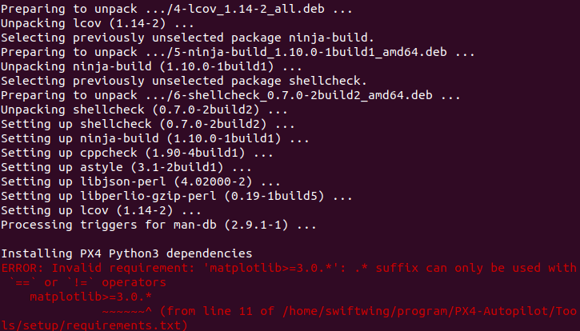
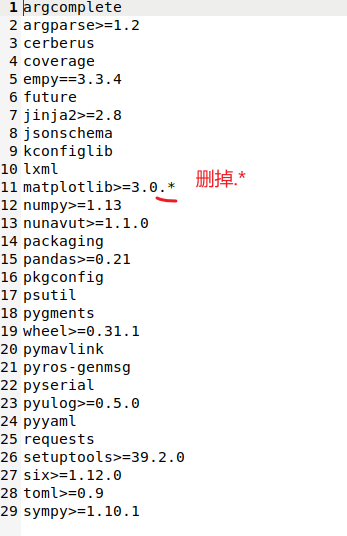

仿真平台环境配置
具体配置包括：Ubuntu 20.04 + ROS Noetic + PX4 + Python3。
需要注意的是，PX4版本迭代较快，新旧版本在默认参数配置上可能稍有出入。若非特殊需求，建议不要安装过旧的版本；此外，PX4+ROS的仿真环境实际上PX4只是作为一个工作空间，因此即使版本不符合要求，也仅需要重新下载编译，并更新环境变量，一般不会对整个ROS环境造成影响。
仿真平台搭建过程主要有三个步骤： 1. 安装Ubuntu20.04； 2. 安装ROS Noetic； 3. 安装PX4环境。
1 Ubuntu安装
Ubuntu安装教程网上较多，此处不再详细叙述。下面简单介绍u盘安装Ubuntu的过程，该方法需要一台用于镜像烧录的电脑和制作启动盘的u盘。双系统和虚拟机安装过程类似可以自行寻找教程。具体步骤如下：
- 制作u盘启动盘。在Ubuntu官网下载Ubuntu20.04镜像文件，用rufus或者ultraISO等工具写入u盘中。（注意：此举会覆盖掉u盘中的内容并且修改u盘分区，使其不可用于文件拷贝，请确保u盘中没有重要文件；在系统安装完成后，可以使用diskgenius等工具修复u盘。）
- Ubuntu安装。u盘插入待安装系统的电脑，启动进入bios，选择从u盘启动，开始安装。（注意：真机和虚拟机的安装过程相同，因此可以参考这篇博客的安装过程。）
- 添加中文支持。部分教程会提供终端改为中文的教程。个人建议终端保持原样，这样在出现报错信息时便于搜索。
- 建议使用英文系统，文件夹路径不会有中文，避免一些潜在的bash路径问题。
- 如果安装双系统后，开机出现启动引导问题，无法启动Ubuntu系统或Windows系统，可以使用boot-repair工具。使用u盘启动盘，bios进入u盘的Ubuntu系统，下载boot-repair软件（需要联网）。下载方式参考此链接：https://help.ubuntu.com/community/Boot-Repair。 打开boot-repair后，选择recommended repair即可，系统会自动为你创建Windows+Ubuntu的引导方式。进入bios可以修改启动顺序。
2 ROS Noetic安装
Ubuntu20.04对应的ros版本为ROS Noetic。强烈建议安装前先实现终端走代理，可解决大部分网络问题。
1.换源。由于官方源在国外，用官方源安装软件可能网速较慢，因此可以换用国内的镜像源。若已经实现终端代理，可直接使用官方源跳过此步。
2.更新源
sudo apt update
sudo apt upgrade
3.设置ros源：
sudo sh -c 'echo "deb http://packages.ros.org/ros/ubuntu $(lsb_release -sc) main" > /etc/apt/sources.list.d/ros-latest.list'
4.设置密钥：
curl -s https://raw.githubusercontent.com/ros/rosdistro/master/ros.asc | sudo apt-key add -
若提示没有安装curl，先安装：
sudo apt install curl
5.ros安装。ros提供 ros-noetic-desktop-full、ros-noetic-desktop、ros-noetic-ros-base三种不同版本，其中ros-noetic-desktop-full包含附件最全，除非设备储存空间十分有限，否则建议安装此版本。安装命令
sudo apt update
sudo apt install ros-noetic-desktop-full
6.设置环境变量。在home目录下，按ctrl+h显示出隐藏文件，在.bashrc文件末尾添加如下一行指令。
source /opt/ros/noetic/setup.bash
这步是为了将ros的相关命令地址写入.bashrc文件，以便在终端调用ros相关指令。
7.rosdep安装。
sudo apt install python3-rosdep
sudo rosdep init
sudo rosdep update
在执行后两句是即使代理配置完成也有相当概率无法完成，此时可以使用国内大佬写的工具rosdepc，也可以通过手动更改文件实现。
8.测试。安装完成后，可进行简单测试：打开三个终端，分别输入以下指令并运行。
roscore
rosrun turtlesim turtlesim_node
rosrun turtlesim turtle_teleop_key
上述第一个命令是打开一个roscore，roscore用于统一协调管理所有ros话题、节点和服务，是ros运行的基础；第二个命令是打开海龟仿真界面，第三个命令用于打开键盘控制终端。
3 PX4安装
px4的安装有：px4下载编译、mavros安装、qground安装三步。其中px4是飞控代码，基于px4搭建的仿真环境即是用了其提供的软在环仿真功能；mavros是有mavlink封装而来的ros功能包，飞控的控制一般是采用mavlink协议，通过mavros我们可以直接利用ros提供的话题、服务等对与飞控进行通信；qground是地面站平台，直接与px4进行通信（无需通过ros），地面站可现实无人机状态、设置飞控参数、控制无人机飞行，还提供模拟摇杆功能，我们主要利用地面站进行无人机状态监视。
3.1 PX4+Gazebo
1.第一步中，px4并不一定需要安装在用户目录下，可根据个人习惯安装在指定路径。
cd 安装目录
git clone https://github.com/PX4/PX4-Autopilot.git --recursive
如果要使用其他版本的px4，例如1.13.0版本，则使用以下命令：
git clone -b v1.13.0 https://github.com/PX4/PX4-Autopilot.git --recursive
2.进入安装目录，下载安装相关组件
cd PX4-Autopilot/
git submodule update --init --recursive
3.执行.sh脚本
bash ./PX4-Autopilot/Tools/setup/ubuntu.sh
4.期间可能出错，需要更新一下pip和Pillow
python3 -m pip install --upgrade pip
python3 -m pip install --upgrade Pillow
如果有其他安装错误，可以尝试使用：
bash ./PX4-Autopilot/Tools/setup/ubuntu.sh --fix-missing
5.期间会出现报错： 
6.我们打开提示的/PX4-Autopilot/Tools/setup/requirements.txt文件，将文件第11行matplotlib>=3.0.*末尾的.*删除掉：

重新运行
bash ./PX4-Autopilot/Tools/setup/ubuntu.sh --fix-missing
这一步结束后，终端内会提示你重启电脑，这里建议一定要重启！！！
7.最后进入PX4-Autopilot目录下编译启动gazebo中的模型
make px4_sitl_default gazebo
在终端输入commander takeoff，可以控制无人机起飞；在终端输入commander land，可以控制无人机降落。
8.编译完成后，在home文件的.bashrc中添加环境变量，“安装目录”为你的PX4-Autopilot文件夹所在目录：
source 安装目录/PX4-Autopilot/Tools/simulation/gazebo-classic/setup_gazebo.bash 安装目录/PX4-Autopilot 安装目录/PX4-Autopilot/build/px4_sitl_default
export ROS_PACKAGE_PATH=$ROS_PACKAGE_PATH:安装目录/PX4-Autopilot
export ROS_PACKAGE_PATH=$ROS_PACKAGE_PATH:安装目录/PX4-Autopilot/Tools/simulation/gazebo-classic/sitl_gazebo-classic
这里需要注意，不同版本的gazebo模型目录可能会不一致，如果使用旧版本，需要自行对照正确的路径。如果无法确定路径位置，可以找自己对应版本的px4 user guide。user guider的Drone Apps&APIs→ROS with MAVROS→ROS/MAVROS with Gazebo Simulation的文章中，有详细介绍对应的路径位置。
3.2 MAVROS
1.安装MAVROS
sudo apt-get install ros-noetic-mavros ros-noetic-mavros-extras
2.安装 GeographicLib 数据集
sudo /opt/ros/noetic/lib/mavros/install_geographiclib_datasets.sh
3.3 安装QGC
安装QGC地面站，参考官方网站即可。
3.4 仿真
通过以下命令可以开启px4软件在环仿真，打开qgc地面站会自动连接上飞机。
roslaunch px4 mavros_posix_sitl.launch
能看到gazebo中无人机模型，qgc地面站连接上无人机。在终端中输入commander takeoff, commander land可以控制无人机起飞和降落。

4 显卡驱动安装
这一步并非必须，只是为了提高gazebo运行流畅度，不影响仿真环境的正常使用。 显卡驱动安装可以参考此篇教程，推荐使用方法2，采用Ubuntu自带的驱动管理程序来安装显卡驱动。显卡驱动安装流程参考
笔者曾采用上述链接中的方法1进行安装后，开机黑屏，屏幕左上方光标闪烁。该问题是选用驱动不合理导致的。可以重启进入ubuntu的恢复模式，选择root选项，在命令行中删除nvidia显卡驱动
sudo apt --purge remove nvidia*
然后重新尝试安装其他版本的驱动程序。